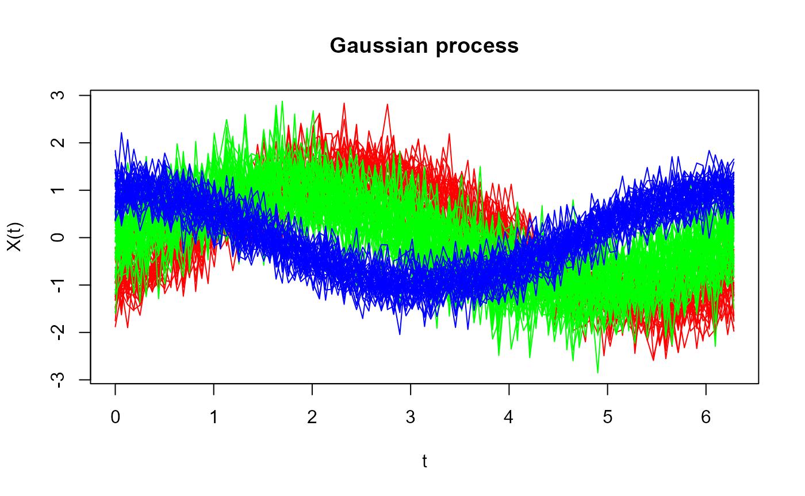

fda.clust: Clustering Functional Data
Manuel Oviedo (UDC), Manuel Febrero (USC)
2024-12-13
Introduction.RmdIntroduction
The fda.clust package provides advanced tools for
clustering functional data. Functional data, which are curves or
functions observed over a continuum (like time or space), appear in
areas like economics, biology, and engineering. Clustering these data
requires specialized approaches distinct from traditional multivariate
clustering algorithms.
This vignette introduces the main functionalities of the
fda.clust package and demonstrates how to cluster both
simulated and real-world functional data.
Installation
# Install from source (if not already installed)
devtools::install_github("username/fda.clust")Simulating Functional Data
The rprocKclust() function simulates functional data
from specific models, enabling the testing of clustering methods.
library(fda.clust)
set.seed(123)
t <- seq(0, 2 * pi, length.out = 101)
res <- rprocKclust(t, n = c(30, 50, 40),
process = c("cos_sin", "sin", "cos"),
c = c(-1, 1, 1), k = c(NA, NA, NA),
s = c(0.2, 0.3, 0.1))
sim_data <- res$X
group <- res$groups
plot(sim_data, type = 'l', col = rainbow(3)[group])
Clustering Methods
The fda.clust package supports several clustering
methods for functional data, including hierarchical clustering, k-means
clustering, and mean-shift clustering.
Evaluation of Clustering Performance
To assess clustering quality, the package offers the function
fclust.measures, which computes indices like:
- Silhouette Index: Measures the cohesion and separation of clusters.
- Dunn Index: Measures the ratio of the smallest inter-cluster distance to the largest intra-cluster distance.
- Davies-Bouldin Index: Measures the average similarity between clusters.
- Calinski-Harabasz Index: Measures the ratio of between-cluster dispersion to within-cluster dispersion.
Example of Clustering Performance Evaluation
# Calculate evaluation indices using fclust.measures
indices <- list(
silhouette = fclust.measures(sim_data, clusters = kmeans_result$cluster, index = 'silhouette'),
dunn = fclust.measures(sim_data, clusters = kmeans_result$cluster, index = 'dunn'),
db = fclust.measures(sim_data, clusters = kmeans_result$cluster, index = 'db'),
ch = fclust.measures(sim_data, clusters = kmeans_result$cluster, index = 'ch')
)
print(indices)## $silhouette
## [1] 0.3004197
##
## $dunn
## [1] 0.4106774
##
## $db
## [1] 2.462815
##
## $ch
## [1] 82.16625Conclusion
The fda.clust package provides robust tools for
clustering functional data, including hierarchical, k-means, and
mean-shift clustering. It supports the simulation of functional data,
allowing users to benchmark clustering methods. For more information,
refer to the official package
documentation or the GitHub repository.